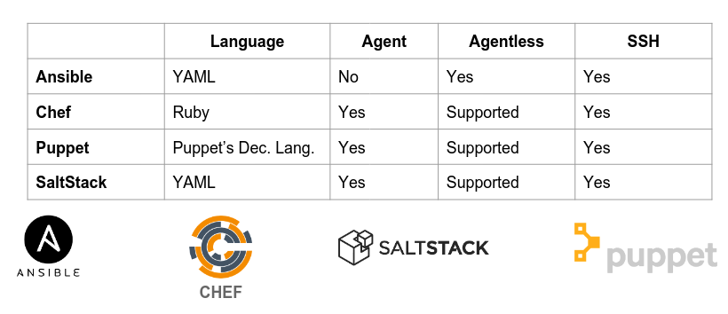

Teórica 04
Aprovisionamento de Sistema (System Provisioning)
Aprovisionamento
Ação de providenciar, oferecer algo para uso.
Trata-se da configuração de servidores e recursos. Prepara o sistema para a fase de deployment.
Exemplos de ações:
- Aprovisionamento de Servidor;
- Aprovisionamento de Armazenamento;
- Aprovisionamento de Rede;
- Aprovisionamento de VMs;
- Aprovisionamento de Utilizadores.
Deployment
Processo de instalar ou dar upgrade de uma aplicação ou serviço num servidor.
- Instalação ou upgrade de aplicações web:
- Ficheiros;
- Migrações;
- Assets.
- Instalação ou upgrade de serviços de rede;
- O scope é o serviço ou a aplicação.
Estas 2 etapas são muito chatas...
- Processo repetitivo;
- Bom para automação.
- Pode ter sistemas muito diferentes;
- É preferível manter um inventário dos diferentes sistemas e correr as tasks de forma sequencial ou paralela.
- Provavelmente, terá ajustes ao longo do tempo;
- Ter um controlo de versões pode ser muito positivo.
- Por vezes, pode consumir muito tempo.
- Deixar a máquina a trabalhar sozinha pode ser muito positivo.
Gestão de Configurações
Uma forma de controlar trocas sistemáticas no sistema mantendo a sua integridade ao longo do seu ciclo de vida.
- Configuração expressa num dialeto comum;
- Resultado da configuração previsível;
- Configuração evolui com a infraestrutura;
- Documentação da infraestrutura como um efeito positivo;
- Histórico completo de trocas quando é utilizado um sistema de gestão do source code;
- Alterações são observáveis;
- Automação do processo;
- Cada unidade de trabalho é expressa como uma receita.
Receitas/Reutilização/Automação
Define automação de tarefas via um conjunto de diretivas expressas numa dada linguagem (p.e. bash).
Existem diversas ferramentas para ajudar neste processo:

Nesta UC iremos utilizar Ansible.
O workflow passa a ser da seguinte forma:

NOTA:
scp é um comando Unix que permite copiar ficheiros entre servidores e máquinas locais.
Ansible
Vocabulário
- Inventário:
- Grupo dos alvos de deployment.
- Módulo:
- Unidade de trabalho reutilizável distribuída com Ansible ou desenvolvida para ele.
- Task:
- Combinação de módulos e argumentos de forma a efetuar uma dada ação.
- Handlers:
- Task especial para responder a uma dada notificação.
- Templates:
- Permite a criação de configurações dinâmicas.
- Role:
- Componente configurável e reutilizável que encapsula variáveis, templates, tasks, handlers...
- Playbook:
- Descreve políticas para sistemas remotos.
Overview do Ansible
- Execução de receitas via SSH ou localmente sem a necessidade de agentes;
- Receitas são expressas em ficheiros YAML;
- Receitas criadas através de módulos e diretivas de tasks;
- Receitas organizadas em roles e playbooks;
- Hosts alvo são definidos no inventário;
- Idempotência.
- Tarefas só correm no caso do alvo diferir daquilo que é expectável que aconteça depois de correr.
Exemplos de Ficheiros
Inventário
Tem extensão .inv. Por exemplo, hosts.inv:
[host]
host-[01:99].example.com
[database]
db-01.example.com
staging.example.com
Playbook
- hosts: all
vars:
username: someuser
shell: /bin/bash
tasks:
- name: create unprivileged user
user:
name: '{{username}}'
password: 'secretpasswordhash'
shell: '{{shell}}'
- name: Set SSH authorized_key
authorized_key:
user: '{{username}}'
state: present
key: "{{ lookup('file', '/home/' + someuser + '/.ssh/id_rsa.pub') }}
Para mais informações acerca do Ansible deve consultar-se a sua documentação.